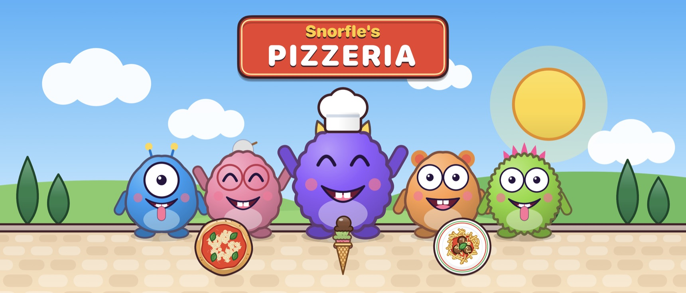
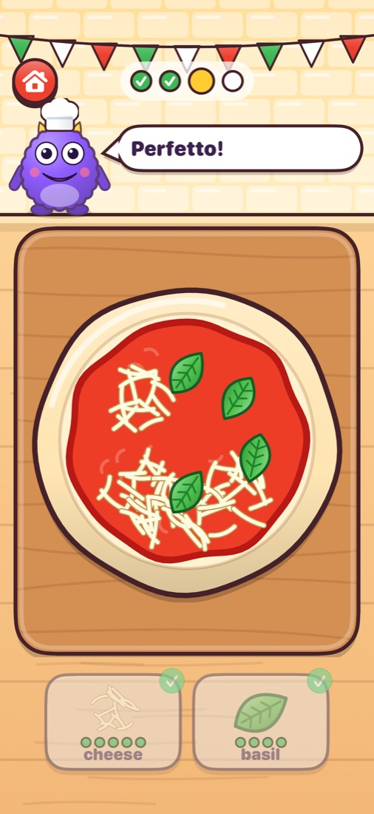
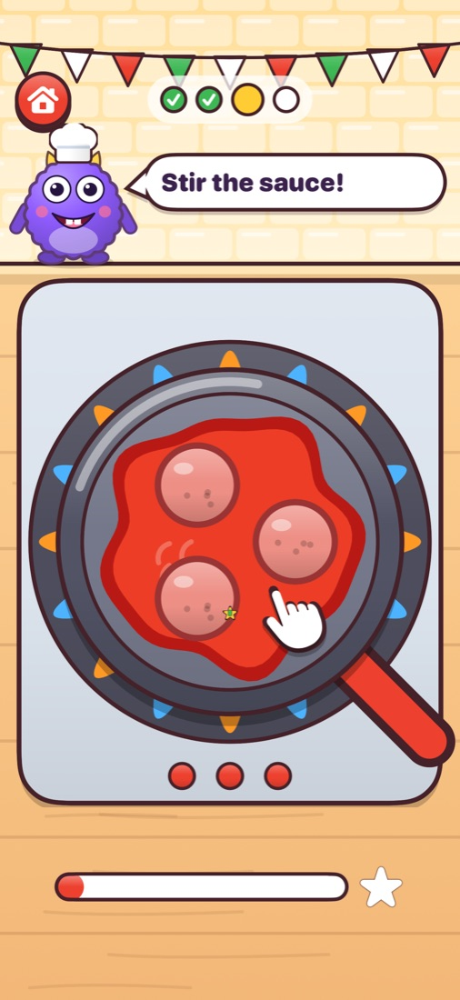
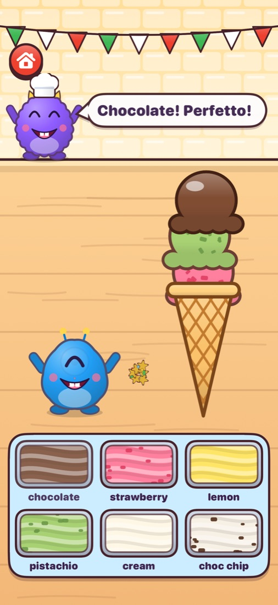

Snorfle's Pizzeria
Cook pizza, pasta and gelato

Ciao! Snorfle's Pizzeria is open, and your child is the chef.
A gentle cooking game for children aged 4 to 6. Hungry monster friends walk up and order, and little chefs make every dish by hand. There is no reading, no timer and no way to lose.



Made for small hands
- One short spoken hint and a pointing hand for every step.
- A wrong tap just wobbles. Every dish earns stars.
- 13 stickers to collect, and a few Italian words to learn.
- Works on iPhone and iPad.
Safe for kids
- No ads.
- No in-app purchases.
- No internet needed, and nothing is collected.